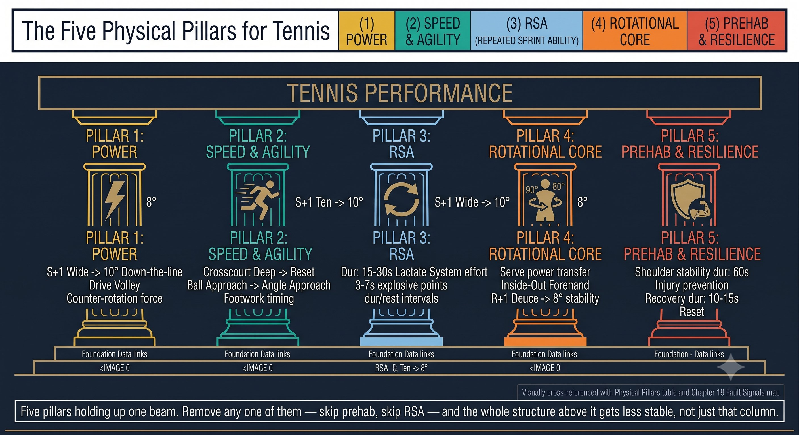
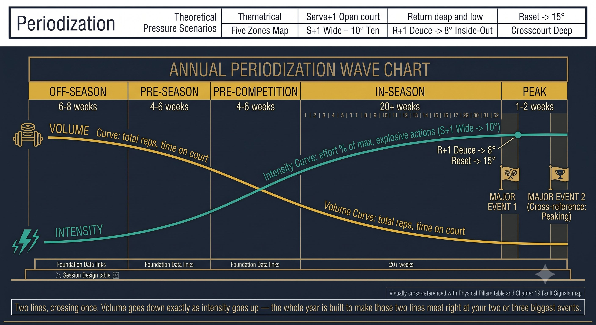
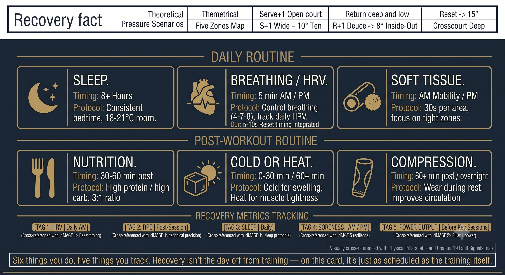

Chapter 29: Physical
(English version of Chapter 29 in the United Tennis Handbook)
CHAPTER 29

Figure 1
PHYSICAL
Tennis-Specific Fitness & Periodization
Tennis isn't a marathon. It's 100 to 300 sprints of 3 to 7 seconds each, with 20 to 25 seconds of rest. Train the energy systems, not the distance.
Energy Systems: the Engine
If you train like a marathoner, you play like a marathoner — slow, tired, with no explosive power. Tennis runs on ATP-PC plus lactate plus aerobic recovery.
— Henry Pham
Tennis demands three energy systems in specific ratios:
Figure 29.1: Three curves, one sport. Notice where a typical point falls on this chart — almost the entire match lives inside the ATP-PC spike, which is exactly why marathon training builds the wrong engine.

Figure 2
RULE: Tennis is ATP-PC (sprint) plus lactate (rally) plus aerobic (recovery). Train all three. Marathon running kills ATP-PC power.
The Five Physical Pillars for Tennis
Figure 29.2: Five pillars holding up one beam. Remove any one of them — skip prehab, skip RSA — and the whole structure above it gets less stable, not just that column.

Figure 3
Session Design: the Two-Hour Tennis-Specific Session
Figure 29.3: Two hours, five blocks, drawn to scale. Technical work should visibly dominate this bar — if your real sessions look more like an even split, the proportions here tell you what to rebalance.

Figure 4
Periodization: the Yearly Plan
Periodization aligns physical peaks with the competitive calendar:
Figure 29.4: Two lines, crossing once. Volume goes down exactly as intensity goes up — the whole year is built to make those two lines meet right at your two or three biggest events.

Figure 5
RULE: You can't peak year-round. Periodize. The off-season builds. The pre-season converts. The in-season maintains. Peak for two to three majors a year.
Weekly Microcycle (In-Season Example)
Figure 29.5: A week shaped like a wave: up, up, down, up, off. Two hard days, never back to back without a low day between them — that shape is the whole point of a microcycle.

Figure 6
Recovery: the Invisible Training
Figure 29.6: Six things you do, five things you track. Recovery isn't the day off from training — on this card, it's just as scheduled as the training itself.
Coach's Tip
If you don't measure it, you can't manage it. Track: HRV (daily), RPE (per session), sleep (hours), soreness (1 to 10), power output (medicine ball throw or sprint time, weekly). Adjust load based on the trends.
Age 40+ / 50+ Adjustments
PRINCIPLE: Masters tennis isn't "less tennis." It's smarter tennis — higher quality, better recovery, specificity over volume.
Physical Checklist
ENERGY: ATP-PC PLUS LACTATE PLUS AEROBIC. PILLARS: POWER, SPEED, RSA, ROTATIONAL CORE, PREHAB. PERIODIZE: OFF TO PRE TO COMPETITION TO PEAK. RECOVER: SLEEP, NUTRITION, COLD, BREATHE, SOFT TISSUE.
– Train all three energy systems: ATP-PC (sprints), lactate (intervals), aerobic (zone 2).
– Five pillars weekly: power, speed and agility, RSA, rotational core, prehab.
– Periodize: off-season builds, pre-season converts, in-season maintains, peak tapers.
– Weekly microcycle: high, low, high, low, medium, match, off.
– Recover daily: sleep 8 to 10 hours, nutrition, breathing, soft tissue.
– Track: HRV, RPE, sleep, soreness, power output. Adjust load.
– 40+/50+: more recovery, more prehab, maintain power with quality, daily mobility.
Where This Leads
This chapter covers the physical game: tennis-specific fitness and periodization. Chapter 30 is the unified Q-V-ROOT-8-45-Impulse quick reference card — the one-page summary of the entire system.